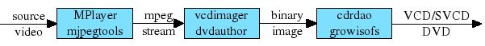
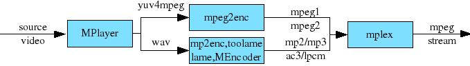

Direct Mode

in this mode encode2mpeg creates an mpeg stream, then a binary image
and finally burns
the image on the selected support (CD or DVD). You do not need to
execute all the steps, you can only create the mpeg stream or the
binary image.
A more detailed view fo the first block is showed below; mpeg2enc is
used to
create the mpeg video stream from a yuv4mpeg stream generated by
MPlayer. The audio stream can be mp1, mp2, mp3, ac3, dts or lpcm.
Different tools
can be used for this purpose: mp2enc, toolame, lame, MEncoder
(libavcodec).

Direct Mode
is the defaul mode. If you do not select a specific mpeg profile a
VCD is created. The profile options are:
-vcd
-svcd [1-2]
-dvd [1-5]
The argument of -svcd selects one the following resolutions:
n
|
PAL
|
NTSC
|
|
1
|
480x576
|
480x480
|
(default)
|
2
|
352x288
|
352x240
|
|
The argument of -dvd selects one the following resolutions:
n
|
PAL
|
NTSC
|
|
1
|
720x576
|
720x480
|
(default)
|
2
|
704x576
|
704x480
|
|
3
|
480x576
|
480x480
|
(non-standard)
|
4
|
352x576
|
352x480
|
|
5
|
352x288 |
352x240 |
|
Common options
The following options can be used with every profile:
-abr <n> (audio bit rate, default 384/mp1, 224/mp2, 128/mp3,
448/ac3-6ch,
192/ac3-2ch )
-asr <n> (audio sample rate, defaul 44100/VCD-SVCD,
48000/DVD)
-vfr <1-8> (video frame rate, defaul is 4/NTSC, 3/PAL)
-gop <n> (the default gop is normally fine)
-n <n|p|s> (video norm)
-mp1 <mp2enc|encode|copy> (create an mp1 audio stream with the
selected
tool, default mp2enc)
-mp2 <mp2enc|toolame|mencoder|copy> (create an mp2 audio stream
with the selected tool, default mp2enc)
-mp3 <lame|mencoder|copy> (create an mp3 audio stream with the
selected tool, default lame)
-acopy (copy of the input audio stream)
-qmatrix <kvcd|tmpgenc|default|hi-res> (select custom
quantization matrices: this can reduces the size of the mpeg stream)
-mpegchannels <1-6> (number of channels of the audio stream, 1-6
for ac3/lpcm, 1-2 for mp1/mp2/mp3)
-normalize (normalize to the audio stream using MPlayer's audio filter
volnorm)
-volume <n> (change the amplitude of the audio stream)
-noscale (encode2mpeg automatically scales the video according to the
mpeg profile chosen, this option disable this feature)
-monochrome
-split <n> (split the resulting video in n MB chunk, defaul 800)
-nosplit (do not split the mpeg stream, defaul is to split)
-isoonly (create the mpeg stream, the binary image and the DVD iso
image without burning
it)
-imageonly (create the mpeg stream and the binary image, but do not
burn
it)
-mpegonly (create only the mpeg stream)
-streamonly (create only the elementary video and audio stream without
multiplexing them)
-cdburndevice (burn device for cdrdao, default 0,0,0)
-dvdburndevice (burn device for growisofs, default /dev/cdrecorder)
-cpu <1-8> (number of threads)
-addchapter <time,time,...|copy> (insert chapters at specified
time, or copy the chapers structure from a DVD)
-mpegfixaspect <pad|crop> (force the aspect ratio of the
source video to match the one specified with -a)
-cbr (force the use of constant bit rate video encoding)
-sync-offset <n> (adjust the audio/video synchronization)
-auto-sync-offset (adjust automatically the audio/video
synchronization; tested with TS streams)
-nowait (do not ask for a keypress before starting the burning process)
-interlaced (use it if your source video is interlaced)
-usespeed (do frame rate conversion changing the playback speed)
-res <1-7> (force one of the following resolutions)
n
|
PAL
|
NTSC
|
|
1
|
352x288
|
352x240
|
(VCD)
|
2
|
352x576
|
352x480
|
(CVD)
|
3
|
480x576
|
480x480
|
(SVCD)
|
4
|
528x576
|
528x480
|
(KVCD)
|
5
|
544x576 |
544x480 |
(KVCD)
|
6
|
704x576
|
704x480
|
(DVB)
|
7
|
720x576
|
720x480
|
(DVD)
|
-kvcd <1-4> (generate KVCD compliant frames on output)
The argument of -kvcd selects one the following resolutions:
n
|
PAL
|
NTSC
|
GOP
|
1
|
528x576
|
528x480
|
24
|
2
|
528x576 |
528x480 |
default |
3
|
544x576 |
544x480 |
24 |
4
|
544x576 |
544x480 |
default |
VCD
For the vcd profile you can specify the following options:
-a <1-3> (aspect ratio, defaul 2)
-vbr <n> (video bitrate, default 1152)
-mpeg1vbr (generate an mpeg1 variable video bit rate stream. Not all
the hardware players can play such VCD)
-blank (blank a cd before burning)
-cdi <path to CD-i application files> (add CD-i compatibility)
SVCD
-a <2-3> (aspect ratio, defaul 2)
-vbr <n> (video bitrate, default 2500)
-ac3 <mencoder|copy> (create an ac3 audio stream with the
selected tool, default mencoder)
-dts <copy> (copy a dts stream)
-lpcm (create an uncompressed lpcm audio stream [48000 or 96000 kHz])
-multiaudio <aid0,aid1,...> (output mpeg stream with several
audio
streams)
-p (play the movie as NTSC video using 3:2 pulldown, -vfr 1
-p creates a smaller stream than -vfr 4)
-blank (blank a cd before burning)
-addsub <sid0,sid1,...> (copy the specified subtitle stream)
-txtsub <subfile> (add the subtitle to the SVCD)
-svcdht (enable the VCD header trick, see http://www.videohelp.com/svcd)
DVD
-a <1-4> (aspect ratio, defaul 2)
-vbr <n> (video bitrate, default 7500)
-ac3 <mencoder|copy> (create an ac3 audio stream with the
selected tool, default mencoder)
-dts <copy> (copy a dts stream)
-lpcm (create an uncompressed lpcm audio stream [48000 or 96000 kHz])
-multiaudio <aid0,aid1,...> (mpeg stream with several audio
streams)
-p (play the movie as NTSC video using 3:2 pulldown, -vfr 1
-p creates a smaller stream than -vfr 4)
-dvdvideoattr <nopanscan|noletterbox|crop> (add a video attribute
to the dvd image)
-dvdaudiolang <code,code,...> (ISO 639 langauges codes)
-addsub <sid0,sid1,...> (copy the specified subtitle stream)
-txtsub <subfile> (add the subtitle to the DVD)
-dvdsdx <mode,id,...+mode,id,...+...> (set the subtitle id for
each stream mode)
Limitations
Direct Mode does not handle correctly video that has a
source frame rate different from the one of the final mpeg stream. This
includes source video with variable frame rate, video with non standard
frame rate (like 15 fps), and, sometimes, NTSC videos.
PAL -> NTSC
conversion is possible if you use the option -usespeed. NTSC -> PAL
conversion is possible using the option -usespeed only is the NTSC
video is not (hard) telecined.
Examples
encode2mpeg -o clip -n p dvd://1 -aid 129 -ss 10:00 -frames 500 -mpegonly -wide2std
encode 20 seconds of video from a DVD to a 4/3 mpeg stream. Log file.
encode2mpeg dvd://1 -aid 128 -o svcd -n p -mp3 -svcd -a 3 -imageonly -addchapter copy
encode a PAL DVD video to a 16/9 PAL SVCD with mp3 audio. Log
file.
encode2mpeg -o vbr -n p dvd://1 -mpeg1vbr -qmatrix kvcd -wide2std -blank
encode a 16/9 PAL DVD video to a 4/3 PAL VCD with mpeg1 variable bit
rate and
using kvcd quantization matrices. Log file.
Top